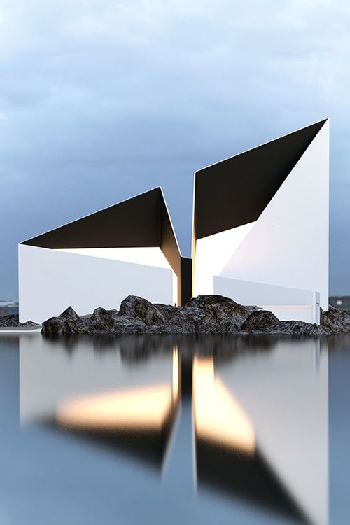

Family: Aktiv Grotesk – Sans Serif
Typeface: Aktiv Grotesk Hairline
I have chosen this font, because it is very simple and minimalistic and it is also a 21st century interpretation of a grotesque sans typeface.
So it s a contemporary typeface. Grotesque fonts have been hugely popular over the last fifty years, with designers and font-users choosing them for their neutrality, contemporary feel, utilitarianism, and seriousness; these are fonts which can be applied in a broad range of contexts and media.
resolution: 500x667 px, size: 116 kb
resolution: 500x750 px, size: 132 kb

resolution: 1000x695 px, size: 219 kb

resolution: 1000x694 px, size 219 kb
resolution 1500x2245 px, size: 1.20 MB
resolution 1500x2250 px, size: 1.23 MB